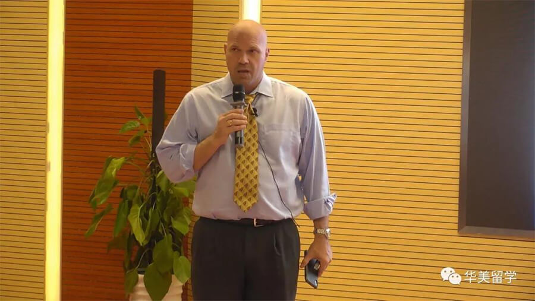

最新活动/留学资讯与你分享
发布者 华美雅思 | 2016-11-04 15:36:15 |

9月16日晚，华美留学有幸邀请到宾夕法尼亚大学前面试官Thomas Asbury来到华美英语实验学校，进行“常春藤盟校录取的关注点及理念”的讲座。Mr. Asbury 的精彩演讲，受到了在座师生的一致好评！现在，让我们来回顾一下讲座内容吧！
上一篇：
最强阵容世界名校团！ 2018华美国际教育展盛大揭幕！
下一篇：